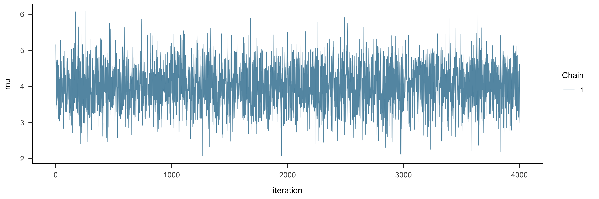
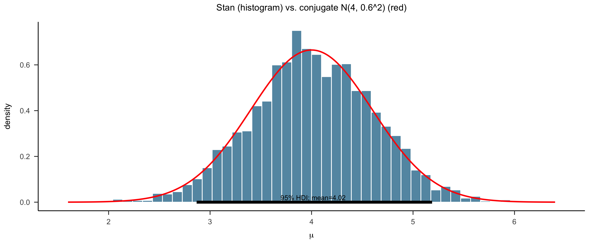
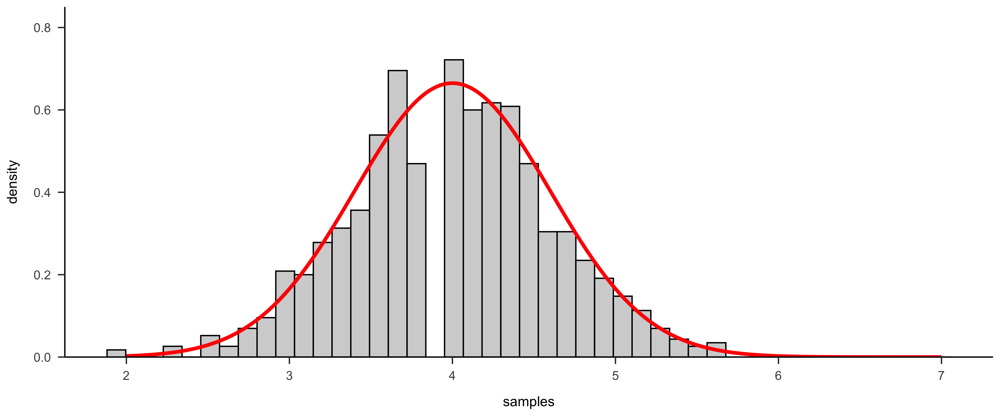
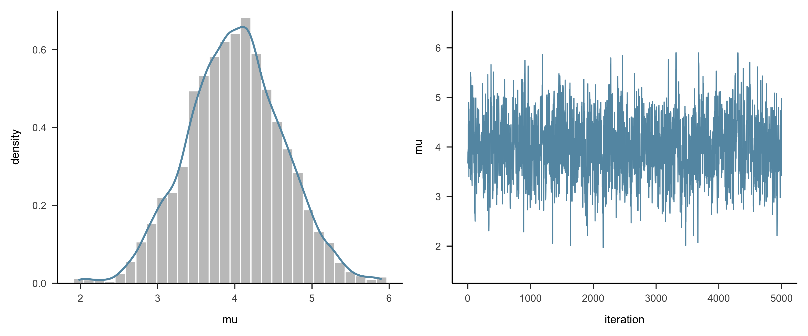
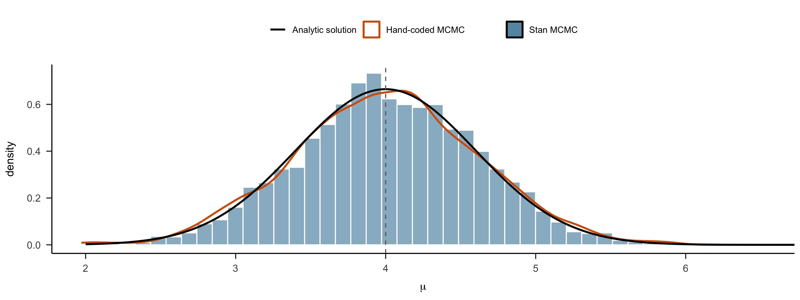
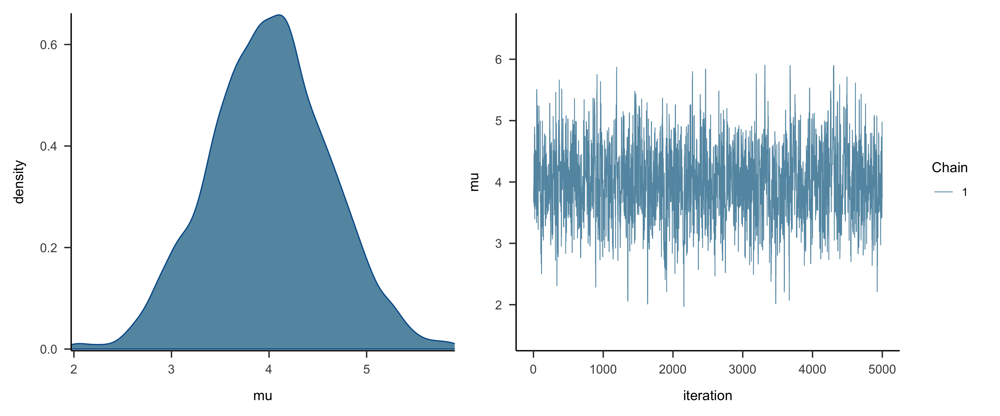
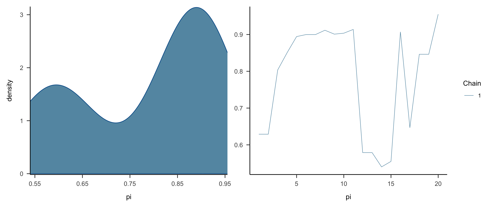
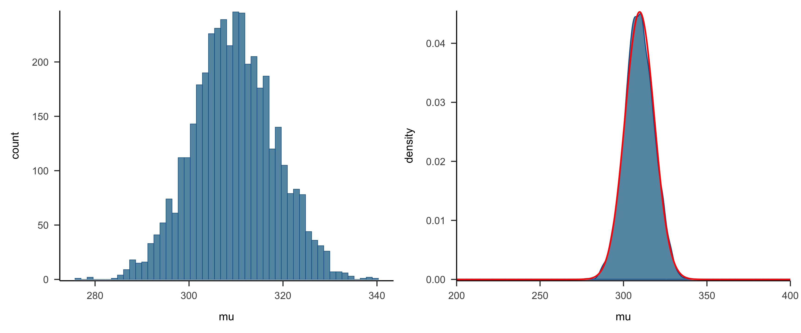
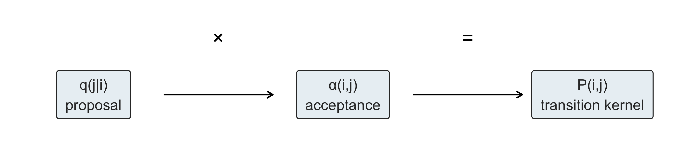

高级心理统计 · 第6讲
MCMC
南京师范大学心理学院 · School of Psychology, Nanjing Normal University
在上一节课中，通过简单的 Beta-Binomial 模型中，我们已经看到 Stan可以帮助我们得到后验分布。
且这个过程中使用了MCMC算法 从后验分布中进行抽样。
为什么 MCMC算法 可以得到后验分布的样本？🤔
我们再用stan来获得一个正态分布的后验。
假设有一个标准差为0.75的正态分布，其均值\(\mu\)的分布是我们想要估计的。从该正态分布中抽取出的一个数据点，得到\(Y=6.25\)。
Normal-Normal：似然、先验与后验
这个问题在贝叶斯的框架之下可以进行如下表述：
似然模型：数据来自于一个正态分布，其均值为\(\mu\)，标准差\(\sigma = 0.75\)。我们观测的数据点为\(Y=6.25\)：
\[ Y|\mu \sim \ N(\mu, 0.75^2) \]先验分布：我们假定在没有观测到任何数据前，上述正态分布的参数均值\(\mu\)可能有如下分布：
\[ \mu \sim \ N(0, 1^2) \]后验分布：我们想要知道的是，观测到\(Y=6.25\)后，我们对\(\mu\)的分布会进行怎样的更新？
\[ \mu | (Y = 6.25) \sim \text{N}(?, ?) \]
方法1: 解析解
在第五课中，提示过Normal-Normal为共轭先验，因此其后验分布可直接计算：
\[ \mu|\vec{y} \sim N\left(\frac{\mu_0\sigma^2 + \bar{y}n\tau^2}{n\tau^2 + \sigma^2}, \frac{\tau^2\sigma^2}{n\tau^2 + \sigma^2}\right) \]
其中：
- \(\bar{y}\) 是样本的均值（观测到的数据, \(Y=6.25\)），
- \(\sigma^2\) 是数据的方差（本例数据标准差已知为 0.75，故 \(\sigma^2 = 0.75^2 = 0.5625\)），
- \(\tau^2\) 是先验的方差（\(\sigma^2_{prior} = 1\)）。
后验均值：代入计算
后验均值：后验均值是先验均值 \(\mu_0\) 和样本均值 \(\bar{y}\) 的加权平均：
\[ \text{posterior mean} = \frac{0 \times 0.75^2 + 6.25 \times 1^2}{1^2 + 0.75^2} = \frac{6.25}{1.5625} = 4 \]
后验方差：代入计算
后验方差：后验方差受先验的方差 \(\tau^2\) 和样本数据的方差 \(\sigma^2\) 的共同影响：
\[ \text{posterior variance} = \frac{1^2 \times 0.75^2}{1^2 + 0.75^2} = \frac{0.5625}{1.5625} = 0.6^2 \]
因此，更新后的\(\mu\)的分布为：
\(\mu | (Y = 6.25) \sim \text{N}(4, 0.6^2)\)
方法2: MCMC
我们可以通过stan来建立贝叶斯模型并且让其帮助我们完成从后验中采样的过程
Step 1：准备观测数据
Step 2：用 Stan 语法定义模型
这一步在 Stan 中声明数据、参数、先验和似然。
其中 \(\mu\) 是需要估计的均值参数。
Step 3：传入数据并运行 MCMC
这一步把 R 中的数据传给 Stan，并使用多条马尔可夫链进行后验采样。
Step 4：查看 Stan 采样结果
这一步查看模型采样后的结果摘要，包括参数估计、后验区间和收敛诊断信息。
Inference for Stan model: anon_model.
4 chains, each with iter=2000; warmup=1000; thin=1;
post-warmup draws per chain=1000, total post-warmup draws=4000.
mean se_mean sd 2.5% 25% 50% 75% 97.5% n_eff Rhat
mu 4.02 0.02 0.6 2.84 3.63 4.01 4.43 5.16 1536 1
lp__ -13.00 0.02 0.7 -15.01 -13.18 -12.73 -12.55 -12.50 2095 1
Samples were drawn using NUTS(diag_e) at Fri Oct 30 00:36:16 2026.
For each parameter, n_eff is a crude measure of effective sample size,
and Rhat is the potential scale reduction factor on split chains (at
convergence, Rhat=1).Step 4b：用 trace 图做视觉检查
summary(fit) 给出的 n_eff、Rhat 是数值诊断；看图（trace plot）是最直观的第一步：横轴为迭代次数，纵轴为采样值，Stan 默认把 4 条链画在一起。
Code

怎么看：✅ 像”毛毛虫”——每条链都在同一条水平带内快速抖动、4 条链相互重叠、没有趋势；❌ 有上升/下降趋势 = 还没收敛（增加迭代或 warmup）；❌ 链之间分层、不重叠 = 没有混合好；❌ 长时间停在同一个值 = 步长（MH 里的 \(\sigma\)）不合适。
Step 5：提取并可视化后验样本
这一步从 Stan 模型中提取参数 \(\mu\) 的后验样本，并画出后验密度曲线。
Step 6：与共轭后验进行对比
这一步把 Stan 抽样得到的后验分布，与 Normal-Normal 共轭公式得到的理论后验放在一起比较。
同时标出后验均值和 95% HDI。
Code
# 方法1 已推导的共轭后验：N(4, 0.6^2)
post_mean <- 4
post_sd <- 0.6
# 从 Stan 结果中提取 μ 的后验样本（列名为 mu）
posterior_samples <- posterior_df
# 理论后验密度曲线
x <- seq(post_mean - 4 * post_sd, post_mean + 4 * post_sd, length.out = 1000)
theoretical <- data.frame(x = x, density = stats::dnorm(x, post_mean, post_sd))
# 计算 95% HDI 与后验均值
hdi <- bayestestR::hdi(posterior_samples$mu, ci = 0.95)
mean_mu <- mean(posterior_samples$mu)
# 叠加 Stan 采样密度与理论后验
p <- ggplot2::ggplot() +
ggplot2::geom_histogram(
data = posterior_samples,
ggplot2::aes(x = mu, y = ggplot2::after_stat(density)),
fill = "#6497b1", colour = "white", bins = 50
) +
ggplot2::geom_line(
data = theoretical,
ggplot2::aes(x = x, y = density),
color = "red", linewidth = 1
) +
ggplot2::annotate("segment",
x = hdi$CI_low, xend = hdi$CI_high,
y = 0, yend = 0, color = "black", linewidth = 2
) +
ggplot2::annotate("text",
x = mean_mu, y = 0.02,
label = paste0("95% HDI; mean=", round(mean_mu, 2)),
size = 3.5, color = "black"
) +
ggplot2::labs(
title = "Stan (histogram) vs. conjugate N(4, 0.6^2) (red)",
x = expression(mu), y = "density"
) +
papaja::theme_apa()
print(p)
获得后验的方式
解析解
MCMC
为什么MCMC可以得到类似的结果呢？
Monte Carlo, Markov Chain 和 Markov Chain Monte Carlo
本节课沿着三步走：
- Monte Carlo：从已知分布中独立抽样，用样本近似这个分布 —— 但前提是分布已知
- Markov Chain：下一个状态只依赖当前状态，长期运行会收敛到平稳分布
- Monte Carlo + Markov Chain = MCMC：让平稳分布向后验分布迭代，就得到了后验样本
什么是 Monte Carlo
- Monte Carlo 方法是一种通过随机独立采样模拟复杂现象的数值计算方法。
假设我们知道这个正方形的面积，想估算图中圆形的面积（但不使用圆的面积的公式），通过何种近似的方法可以怎么解决这一问题呢？

|

|
Monte Carlo：步骤与核心思想
- 随机投点：我们在一个边长为 10厘米 的正方形区域内随机放置 20 个点，每个点的位置与其他点独立。
- 计算圆内的点数比例：统计这些点中有多少落在圆内，并计算这一比例。
- 面积估算：根据比例，乘以正方形的面积（100 平方厘米），即可得到近似的圆面积。
Monte Carlo 的核心思想：
- 随机独立抽样：通过从某个已知的概率分布中随机抽样，估计该分布的期望或其他统计量。
- 近似逼近：随着样本数量增加，抽样结果会逐渐逼近真实分布的统计特性。
对于前面的问题：观测到\(Y=6.25\)后，\(\mu\)的后验分布是什么？
如果能够得到一些抽样的样本，它符合后验分布，我们就得到了后验分布的采样了，就可以用来估计后验分布了？
上述问题，我们通过解析解得到了 \(N(4, 0.6^2)\)。因为我们已知这个后验分布的具体参数，所以可以直接用代码从它里面抽样（Monte Carlo），得到后验分布的样本。
Code
前 10 个样本值： 4.543541 4.238803 4.833759 4.236146 3.473166 4.345571 3.739735 3.584051 4.127781 4.705284Code
# 绘制图像
df <- data.frame(x = x_range, y = y_norm)
ggplot2::ggplot(df, aes(x = x, y = y)) +
ggplot2::geom_histogram(aes(x = samples, y = after_stat(density)),
bins = 45,
fill = "lightgrey",
color = "black") +
ggplot2::geom_line(color = 'red', linewidth = 1.5) +
ggplot2::scale_y_continuous(expand = c(0, 0) , limits = c(0, 0.85)) +
papaja::theme_apa()
后验分布模型 vs. 从后验分布采样
后验分布的模型：
\(\mu | (Y = 6.25) \sim \text{N}(4, 0.6^2)\)
后验分布采样的样本：
通过Monte Carlo过程获得的，符合后验分布特点的样本
后验分布采样的特点：采样相互独立；某个区间在后验分布中的可能性越大，采样中该出的样本数据就越多。
后验分布模型 <–> 后验分布采样
似乎有个小问题：要通过后验分布采样来估计后验分布，要先知道后验分布的具体参数，但这个参数却又是未知的。
但我们似乎也有了一点进展：如果通过某种方式获得后验分布采样，即可以近似认为得到了后验分布，那如何获得后验分布采呢？
Monte Carlo的路子走不通，有没有什么其他办法？
Markov Chain Monte Carlo
Markov Chain（马尔可夫链）可以帮我们在未知后验分布的情况下获得后验采样。
Markov Chain的特点：
- 从一个随机的样本出发，每次只关注当前样本与下一样本的关系。
- 利用当前样本以某种规则来建议下一个样本（如，通过“建议分布，proposed distribution”）。
- 以一定标准判断是否接受新的状态。
- 如何从当前状态到下一状态的“规则”是合理的，大量采样后收敛至后验分布样本（即概率高的地方采样多）
Markov Chain示例：心情状态的转移
以一个心情变化的例子来理解 Markov Chain：
- 假如不同的情绪对应一种状态，也就是参数可能的取值。
- 那么，我们可以将不同的心情（如“冷静”、“悲伤”、“开心”）定义为 状态。这些状态中的每一个代表参数 \(\theta_k\) 的不同取值：
- 例如，开心是\(\theta_1=0.7\)；冷静是 \(\theta_2=0.5\); 悲伤是 \(\theta_3=0.3\) 以此类推…..。
- 可确定参数选择的范围 \(\theta_{k} \sim [0,1]\)，参数是离散变量，每一个值对应一种心情。
- 用下标
k来表示不同的心情以及对应的参数值。
- 例如，开心是\(\theta_1=0.7\)；冷静是 \(\theta_2=0.5\); 悲伤是 \(\theta_3=0.3\) 以此类推…..。

|
Markov Chain示例：心情状态的转移
- 状态转移：每一天我们的心情都会发生变化或者不变，代表一次采样，即一次状态的转移。
- 长时间跟踪这些状态，我们会得到一个 马尔可夫链:\(\left\lbrace \theta^{(1)}, \theta^{(2)}, \ldots, \theta^{(n)} \right\rbrace\),这里 \(n\) 表示天数，\(\theta^{(n)}\) 是第 \(n\) 天的具体心情。
- “无记忆性”：无记忆性是马尔可夫链的关键特点,今天的心情（当前状态）只依赖于昨天的心情（前一状态），例如：
- 如果前一天是“开心” \(\theta_1\)，那么今天仍然保持“开心”的概率是 0.5，
- 变为“冷静”的概率是 0.25，变为“悲伤”的概率也是 0.25。
- 如果前一天是“开心” \(\theta_1\)，那么今天仍然保持“开心”的概率是 0.5，
状态转移表
我们可以根据上面的概率构建一个状态转移表，用于描述从一个状态跳转到另一个状态的可能性：
| 心情 | 开心\(\theta^{(n)}_{1}\) | 冷静\(\theta^{(n)}_{2}\) | 悲伤\(\theta^{(n)}_{3}\) | … |
|---|---|---|---|---|
| 开心\(\theta^{(n-1)}_{1}\) | 0.5 | 0.25 | 0.25 | … |
| 冷静\(\theta^{(n-1)}_{2}\) | 0.5 | 0 | 0.5 | … |
| 悲伤\(\theta^{(n-1)}_{3}\) | 0.25 | 0.25 | 0.5 | … |
| … | … | … | … | … |
状态转移表：如何理解
解释：
- 每一行代表当前状态影响下一状态的概率，也就是 当日心情(n)受到上一天心情(n-1)的影响。
- 可以写成服从概率分布的形式：\(choice(n) \sim Distribution(n-1)\)。
- 这里的 distribution 可以理解为建议分布。
- 它为第二天的心情变化提供了可能的选项，所以被称为建议分布 \(q(x)\)，并且根据这个分布来选择是否接受新的状态。
- ⚠️ 这只是类比：心情链里提议了就一定接受，所以转移矩阵本身就是转移核；而 MH 中真正的转移核 =「建议分布 \(q\) × 接受率 \(\alpha\)」两部分合起来（详见附录”细致平衡”）。
- 它为第二天的心情变化提供了可能的选项，所以被称为建议分布 \(q(x)\)，并且根据这个分布来选择是否接受新的状态。
马尔可夫链的的特点：如果转移矩阵是确定的，那么经过较长时间的状态转移后，最终各个状态的频率就会稳定下来，高概率的更多出现，低概率的则更少出现。
这个最终的状态，不就是我们想要的？
心情示例：2000 天的情绪频率
分别以开心、冷静、悲伤为起点，按照上面的转移矩阵各走 2000 步（每步 = 一天），统计三种情绪的出现情况：
- 上排：三种情绪的出现频率与理论分布的对比（灰色虚线 = 理论平稳分布 \(\pi = (0.4, 0.2, 0.4)\)）。
- 下排：累计频率随天数的变化，三条线都逐渐趋向 \(\pi\) 中对应的值——无论从哪种心情开始。
Code
# 状态转移矩阵 P：行 = 前一天(n-1)，列 = 当天(n)
P <- matrix(c(0.5, 0.25, 0.25,
0.5, 0, 0.5,
0.25, 0.25, 0.5),
nrow = 3, byrow = TRUE,
dimnames = list(c("Happy", "Neutral", "Sad"),
c("Happy", "Neutral", "Sad")))
emo <- c("Happy", "Neutral", "Sad")
n_days <- 2000
# 从 start 出发，按照 P 转移 n_days 次（每次 = 一天）
set.seed(202409)
sim_mood <- function(start, n) {
s <- character(n + 1)
s[1] <- start
for (i in 1:n) s[i + 1] <- sample(emo, 1, prob = P[s[i], ])
s
}
# 分别以三种情绪为起点，各模拟一条链
chains <- lapply(emo, sim_mood, n = n_days)
names(chains) <- emo
# 出现频率
freq <- do.call(rbind, lapply(emo, function(st)
data.frame(Starting = st, Emotions = emo,
freq = as.numeric(table(factor(chains[[st]], levels = emo))) / (n_days + 1))))
# 累计频率
cum <- do.call(rbind, lapply(emo, function(st)
do.call(rbind, lapply(emo, function(e)
data.frame(Starting = st, Emotions = e, day = 1:(n_days + 1),
cumfreq = cumsum(chains[[st]] == e) / (1:(n_days + 1)))))))
pi_df <- data.frame(Emotions = emo, freq = c(0.4, 0.2, 0.4))
# 上排：出现频率（灰虚线 = 理论平稳分布）
bar_plot <- ggplot(freq, aes(Emotions, freq)) +
geom_col(fill = "#6497b1") +
geom_text(aes(label = sprintf("%.2f", freq)), vjust = -0.4, size = 3) +
geom_line(data = pi_df, aes(Emotions, freq, group = 1), linetype = "dashed", color = "grey30") +
geom_point(data = pi_df, aes(Emotions, freq), shape = 18, size = 3, color = "grey30") +
facet_wrap(~ Starting) + ylim(0, 0.5) +
labs(x = NULL, y = "frequency") + papaja::theme_apa()
# 下排：累计频率随天数变化
cum_plot <- ggplot(cum, aes(day, cumfreq, color = Emotions)) +
geom_line() +
geom_hline(data = pi_df, aes(yintercept = freq, color = Emotions),
linetype = "dashed", show.legend = FALSE) +
facet_wrap(~ Starting) + ylim(0, 1) +
labs(x = "days", y = "cumulative frequency") + papaja::theme_apa()
bar_plot / cum_plot
Markov Chain + Monte Carlo
已知：
Monte Carlo 方法通过从目标分布中直接进行随机采样，样本在高概率处更多，在低概率处更少。
Markov Chain 的方法可以通过仅关注当前样本与下一样本，通过大量迭代，最终收敛到一个稳定的状态。
那么，是否可以通过Markov Chain来构造出一个类似于Monte Carlo的样本出来？
构建一个符合目标分布的马尔可夫链：
每次新样本的生成依赖于前一个状态（非独立的采样），逐步逼近目标分布。长时间采样达到平稳分布：
当马尔可夫链达到稳态分布时，采样结果便可以作为目标分布采样（独立采样）的近似。
听起来非常美好，关键在于采样的规则：如何让后验分布中高概率处的样本更多地保留下来且也有低概率处相对更少的样本。
贝叶斯模型中有什么可以帮忙Markov Chain获得近似于Monte Carlo样本的信息？
Markov Chain需要什么信息：从当前样本如何propose下一个样本；以什么规则决定是否保留下一个样本（是否转移状态）
后验分布中Monte Carlo采样的特点: 高概率处多采样，低概率处少采样
理想状态：直接计算每个参数样本在后验分布中的概率，利用这个概率来决定每个样本保留的可能性（Monte Carlo）
现实状态：后验分布未知，每个参数样本在后验分布的概率无法计算。
但是
- 先验分布 * 似然 = 未归一化的后验分布(unnormalized posterior)
对于每个样本，我们是否可以利用它们在后验分布中的相对可能性大小，来让一个样本更高概率地被采样，另一个样本更低概率地被采样？
为什么未归一化后验可能性有信息
对于贝叶斯推断来说，可以不用计算归一化因子，直接通过对后验分布的采样来近似得到后验分布。
\[ f(\mu | y=6.25) \propto f(\mu)L(\mu|y=6.25) \]
- 尽管未归一化的分布并不是真正的后验分布，但这二者的形状、集中趋势、变异性是一样的
- 重要的是，参数样本\(\mu\) 取值范围是一致的
因此，当Markov Chain的采样时，要决定下一个样本是否保留下来时，可以利用它们未归一化的后验可能性的相对大小来替代它们在真实的后验分布 \(f(\mu)\)中的概率值
未归一化后验：图示

- 那么新的问题是，如何有效地利用未归一化的后验可能性的相对大小来生成样本？🤔
- 这正是MCMC的神奇之处
MCMC：算法示例与本课重点
尽管 MCMC 的实现方式多种多样，但所有方法的目标都是构建一个符合目标后验分布的马尔可夫链。许多 MCMC 算法，如 吉布斯采样、差分进化算法 以及 PyMC 默认使用的 NUTS（No-U-Turn Sampler），都是 Metropolis-Hastings 算法的变种。

|

|

|
| 吉布斯采样算法 | 差分进化算法 | 汉密尔顿算法 |
通过这些算法，我们可以对难以直接求解的后验分布进行近似。
- 我们将在本节课重点讨论 Metropolis-Hastings (MH) 算法，而不是研究所有的变种。
- 虽然实现该算法需要计算机编程技能，而这些技能并不在本课程的范围之内（例如编写函数和 for 循环），
- 😜ps. 即使没有学会 MH 算法的实现，也不妨碍我们通过 stan 来实现各种 MCMC 算法。
MCMC: Metropolis-Hastings(MH)算法
最朴素的MCMC思想：
- 首先，随机取一个初始参数值 \(\theta^{n}\)（本课后面取 3）。
- 然后，在 \(\theta^n\) 这个点上基于建议分布（或者直接理解为某种规则）建议一个新的参数样本 \(\theta^{n+1}\) 被保留的可能性越高。
- 第三，基于某规则来决定是否转移到新建议的参数样本上去。
- 不断重复上述三步。
建议分布(proposed distribution)
- 在MCMC 中，建议分布 (proposed distribution) \(q(x)\)是从当前样本产生下一个建议样本的重要步骤。
- 建议分布可以非常简单，比如以当前样本为中心，一定“半径”内均匀分布；或者以当前样本为中心，特定标准差的正态分布。
- 建议分布是决定的是下一个参数样本是什么，但并不决定我们是否接受该参数样本。
在我们情绪状态转移中，处于某个情绪状态时，可能有不同的“建议分布”，比如处于冷静状态时，就只有“开心”和“悲伤”两种可能的建议值。

接受率 (acceptance probability)
假如我们以这样的正态分布作为建议分布，则可以从这个正态分布中抽取一个值作为下一样本的建议值：\(\theta^{n+1} \sim Normal(\theta^{n},\sigma)\)。
建议值仅仅只是建议值，我们还有机会来决定保留还是拒绝这一建议值。
- 假设上一次采样的参数值为 \(\theta^{n} = 3\)， 根据建议分布 \(q(\theta) = Normal(3, 1)\) 进行一次采样，得到参数 \(\theta^{n+1} = 3.98\)。
- 我们应该如何决定这个建议参数样本的去留？
不同接受策略：三种情况
不同接受策略的影响
可以考虑三种接受建议的情况：
1：始终不接受提议。
2：始终接受提议。
3：只有当提议(i+1)的后验可能性大于当前(i)值的后验可能性时，才接受提议
不同接受策略：轨迹图
看看这三种情况对应生成的trace plot

不同接受策略：解释
A. 使得马尔科夫链在采样时一直停在同一个值
B. 马尔科夫链的采样并不会稳定在某一个范围内
C. 采样只停留在\(\mu = 4\)附近(只能采到一部分值)
- 因此，尽管采样应该更多地停留在“高后验可能性的值”，但也不能只取到这附近的值。
接受率：公式
MCMC的目标：高概率处多采样，低概论处少采样。
接受率 (acceptance probability)
–> 接受率 (\(\alpha\), acceptance probability)让最终保留下来的样本能达到目标
- 首先，我们将从建议模型中抽取一个新的参数 \(\theta^{n+1}\) 的概率为 \(q(\theta^{n+1}|\theta^{n})\)
- 对于是否接受 \(\theta^{n+1}\)，我们定义接受概率\(\alpha\)
\[ \alpha = \min\left\lbrace 1, \; \frac{f(\theta^{n+1})L(\theta^{n+1}|y)}{f(\theta^{n})L(\theta^{n}|y)} \times \frac{q(\theta^{n}|\theta^{n+1})}{q(\theta^{n+1}|\theta^{n})} \right\rbrace. \]
接受率：各项解释
- 别看这公式很复杂，其实很简单。
- 分数的上下分别代表下一个参数 \(\theta^{n+1}\) 和当前参数 \(\theta^{n}\) 的非标准化后验。即我们之前提到，要通过非标准化后验来判断是否接受一个参数。
- 其中，\(f(\theta)L(\theta|y)\) 为非标准化后验
- \(q(\theta^{n}|\theta^{n+1})\) 部分代表了从建议分布中采样新参数的过程。
- 其中，\(f(\theta)L(\theta|y)\) 为非标准化后验
- 可以想象，\(\frac{f(\theta^{n+1})L(\theta^{n+1}|y)}{f(\theta^{n})L(\theta^{n}|y)}\) 大于1且其值越大，表明下一个参数\(\theta^{n+1}\)的后验概率越大，因此它越有可能被接受。
- 如果 \(\frac{f(\theta^{n+1})L(\theta^{n+1}|y)}{f(\theta^{n})L(\theta^{n}|y)}\) 小于1，则代表下一个参数 \(\theta^{n+1}\) 的后验概率过小，因此我们保留它的概率应该也要小一些。
接受率：接受或保留当前位置
所以，对于是否接受或拒绝新的参数 \(\theta^{n+1}\)，则有：
\[
\theta^{(n+1)} =
\begin{cases}
\theta^{(n+1)} & \text{ with probability } \alpha \\
\theta^{(n)} & \text{ with probability } 1- \alpha. \\
\end{cases}
\]
- 也就是如果我们不接受新的参数，那我们用原来的参数替代现在的参数。
- 避免参数采样被浪费，并且使得后验可能性更大的参数样本被更多的采样。
MH 算法包含两个关键思想和两个关键步骤：
两个关键思想
- 根据非标准化的后验进行参数的接受或拒绝
- 根据 Markov Chain 的特性设置建议分布来完成状态转移
两个关键步骤
- 设定建议分布
- 设定接受率
代码示例
用代码感受一下这个过程
首先，我们假设当前的参数值 \(\theta^{n} = 3\)，然后我们根据该参数设定建议分布，并进行一次新的采样。
- 注意，这里的建议分布是 \(\theta^{n+1} \sim N(\mu = \theta^{n}, \sigma = 1)\) ，即方差固定为1。
接着，我们根据新采样得到的参数计算其相关的接受率。
- 注意，假定先验为正态分布：\(N(\mu = 0, \sigma = 1)\)
- 如前所述，仅一个观测数据：\(Y = 6.25\)
Code
# 先验为N(0,1)，在此先验下计算两个参数样本的条件概率
proposal_prior <- dnorm(proposal, mean = 0, sd = 1)
current_prior <- dnorm(current, mean = 0, sd = 1)
# 定义似然函数
likelihood <- function(theta) {
Y <- 6.25 # 数据 Y = 6.25
return(dnorm(Y, mean = theta, sd = 0.75)) # 固定 Likelihood的 sd=0.75
}
# 计算建议位置的未归一化的后验概率值（先验 * 似然）
proposal_posterior <- proposal_prior * likelihood(proposal)
# 计算当前位置的未归一化的后验概率值（先验 * 似然）
current_posterior <- current_prior * likelihood(current)
# 计算接受概率α，为两者概率值之比
alpha <- min(1, proposal_posterior / current_posterior)
# 打印出接受概率α
cat("后验比为：", proposal_posterior / current_posterior, ", alpha为:", alpha, "\n")后验比为： 4.008581 , alpha为: 1 我们根据接受率 \(\alpha\) 来概率性地决定是否接受建议分布的参数作为新的采样值。
定义单次采样函数
我们可以直接定义一个函数，将刚刚的操作全都结合在一起，这样当我们想进行抽样的时候，不用重复写代码
Code
one_mh_iteration <- function(current, sigma = 1) {
# 提议值:从均值为current，方差为sigma（默认值为1）的正态分布中抽样
proposal <- rnorm(1, mean = current, sd = sigma)
# 先验为N(0,1)，在此先验下计算两个参数样本的条件概率
proposal_prior <- dnorm(proposal, mean = 0, sd = 1)
current_prior <- dnorm(current, mean = 0, sd = 1)
# 定义似然函数
likelihood <- function(theta) {
Y <- 6.25 # 假设数据 Y 为 6.25
return(dnorm(Y, mean = theta, sd = 0.75)) # 计算似然
}
# 计算未归一化的后验可能性
proposal_posterior <- proposal_prior * likelihood(proposal)
current_posterior <- current_prior * likelihood(current)
# 计算接受概率 alpha，需要考虑到未归一化后验可能性计算不出来的情况。
if (is.na(proposal_posterior) || is.na(current_posterior) || current_posterior <= 0) {
alpha <- 0
} else {
alpha <- min(1, proposal_posterior / current_posterior)
}
# 按接受概率 alpha 进行抽样
next_stop <- sample(c(proposal, current), 1, prob = c(alpha, 1 - alpha), replace = TRUE)
# 返回建议值、接受概率和下一个位置组成的数据框
result <- data.frame(proposal = proposal, alpha = alpha, next_stop = next_stop)
return(result)
}
# 设置随机种子
set.seed(2024)
# 调用函数并显示结果
results <- one_mh_iteration(current = 3)
print(results, row.names = FALSE) proposal alpha next_stop
3.981969 1 3.981969多次采样
上述函数只进行了一次采样，即当前位置为3时，下一个可能采样的结果。
基于当前位置，提出下一个采样值，接受或拒绝它。如果接受，新的参数样本变成了新的当前样本；如果拒绝，原当前样本继续保留，成为新的当前样本。
基于新的当前样本，再次建议并决定是否接受建议值，不断重复这个过程。
Code
mh_tour <- function(N, sigma = 1) {
current <- 3
mu <- numeric(N) # 创建一个长度为 N 的零向量
# 循环进行 N 次迭代
for (i in 1:N) {
sim <- one_mh_iteration(current, sigma) # 调用采样函数
mu[i] <- sim$next_stop # 保存当前的下一个位置
current <- sim$next_stop # 更新当前值
}
# 返回包含迭代次数和每次采样结果的数据框
result <- data.frame(iteration = 1:N,mu = mu)
return(result)
}采样结果图示
Code
# 绘制密度图
density_plot <- ggplot2::ggplot(mh_simulation, aes(x = mu)) +
ggplot2::geom_histogram(aes(y = after_stat(density)),
bins = 30,
color = "white",
fill = "darkgrey",
alpha = 0.7) +
ggplot2::geom_density(aes(y = after_stat(density)),
color = "#6497b1",
linewidth = 1) +
ggplot2::labs(x = "mu", y = "density") +
papaja::theme_apa() +
ggplot2::scale_y_continuous(expand = c(0, 0) , limits = c(0, 0.7))
# 绘制轨迹图
trace_plot <- ggplot2::ggplot(mh_simulation, aes(x = iteration, y = mu)) +
ggplot2::geom_line(color = "#6497b1") +
ggplot2::labs(x = "iteration", y = "mu") +
papaja::theme_apa() +
ggplot2::scale_y_continuous(limits = c(1.5, 6.5))
# 将两个图并排显示
density_plot + trace_plot
我们可以使用 bayesplot包简化这个绘图的过程
比较三种做法： 解析解、Stan的MCMC和手搓的MCMC：
三种做法，同一个模型（先验 \(\mu \sim N(0, 1)\)，似然 \(Y \sim N(\mu, 0.75^2)\)，\(Y = 6.25\)）。
Code
# 1) 解析解：共轭后验 N(4, 0.6^2)
x_grid <- seq(2, 7, length.out = 1000)
analytic_df <- data.frame(x = x_grid, density = dnorm(x_grid, 4, 0.6))
# 2) Stan 的后验样本
stan_df <- data.frame(mu = posterior_df$mu)
# 3) 手搓 MH 的后验样本（与 Stan 用的是同一个先验 N(0,1)）
mh_df <- data.frame(mu = mh_simulation$mu)
# 三条曲线叠在同一张图上；灰色虚线标出三种做法的共同中心 4
ggplot() +
geom_histogram(data = stan_df, aes(x = mu, y = after_stat(density), fill = "Stan MCMC"),
colour = "white", bins = 50, alpha = 0.7) +
geom_density(data = mh_df, aes(x = mu, colour = "Hand-coded MCMC"), linewidth = 1) +
geom_line(data = analytic_df, aes(x = x, y = density, colour = "Analytic solution"), linewidth = 1) +
geom_vline(xintercept = 4, linetype = "dashed", colour = "grey40") +
coord_cartesian(xlim = c(2, 6.5)) +
scale_fill_manual(values = c("Stan MCMC" = "#6497b1")) +
scale_colour_manual(values = c("Analytic solution" = "black",
"Hand-coded MCMC" = "#D55E00")) +
labs(x = expression(mu), y = "density", fill = NULL, colour = NULL) +
papaja::theme_apa() +
theme(legend.position = "top")
调试(Tuning)Metropolis-Hastings 算法
在建议分布 \(\theta_{n+1} | \theta_{n} \; \sim \; \text{Normal}(\theta_{n}, \sigma)\)中，\(\sigma\)反映了 建议选项的分布宽度，对\(\sigma\) 的选择也会影响马尔科夫链的表现
🧐思考：我们仍然使用MH算法，尝试三种不同的\(\sigma\)
- \(\sigma = 0.01\)
- \(\sigma = 1\)
- \(\sigma = 100\)
请你判断以下的轨迹图和密度图分别对应上述哪种情况
MH 调试：轨迹图与密度图

可以结合以下完整的代码进行判断
Code
one_mh_iteration <- function(current, sigma = 1) {
# 提议值:从均值为current，方差为sigma（默认值为1）的正态分布中抽样
proposal <- rnorm(1, mean = current, sd = sigma)
# 根据先验分布计算两个参数样本的先验可能性
proposal_prior <- dnorm(proposal, mean = 0, sd = 1)
current_prior <- dnorm(current, mean = 0, sd = 1)
# 定义似然函数
likelihood <- function(theta) {
Y <- 6.25 # 假设数据 Y 为 6
return(dnorm(Y, mean = theta, sd = 0.75)) # 计算似然
}
# 计算未归一化的后验可能性
proposal_posterior <- proposal_prior * likelihood(proposal)
current_posterior <- current_prior * likelihood(current)
# 计算接受概率 alpha
if (is.na(proposal_posterior) || is.na(current_posterior) || current_posterior <= 0) {
alpha <- 0
} else {
alpha <- min(1, proposal_posterior / current_posterior)
}
# 根据接受概率 alpha 进行抽样
next_stop <- sample(c(proposal, current), 1, prob = c(alpha, 1 - alpha), replace = TRUE)
# 返回建议值、接受概率和下一个位置组成的数据框
result <- data.frame(proposal = proposal, alpha = alpha, next_stop = next_stop)
return(result)
}
mh_tour <- function(N, sigma = 1) {
current <- 3
mu <- numeric(N) # 创建一个长度为 N 的零向量
# 循环进行 N 次迭代
for (i in 1:N) {
sim <- one_mh_iteration(current, sigma) # 调用采样函数
mu[i] <- sim$next_stop # 保存当前的下一个位置
current <- sim$next_stop # 更新当前值
}
# 返回包含迭代次数和每次采样结果的数据框
result <- data.frame(iteration = 1:N,mu = mu)
return(result)
}Code
#===========================================================================
# 请修改 sigma 的值。
#===========================================================================
set.seed(84735)
mh_simulation = mh_tour(N=5000, sigma=1)
#创建绘图数据框
sample_x <- as.data.frame(mh_simulation$mu)
#采样密度图
dens_x <- bayesplot::mcmc_dens(sample_x) +
ggplot2::labs(x = "mu", y = "density") +
papaja::theme_apa()
#采样轨迹图
trace_x <- bayesplot::mcmc_trace(sample_x) +
ggplot2::labs(x = "iteration", y = "mu") +
ggplot2::scale_y_continuous(limits = c(1.5, 6.5)) +
papaja::theme_apa()
dens_x + trace_x
Code
#===========================================================================
# 可以自行复制代码多试几次
#===========================================================================
mh_simulation = mh_tour(N=5000, sigma=...)
#创建绘图数据框
sample_x <- as.data.frame(mh_simulation$mu)
#采样密度图
dens_x <- bayesplot::mcmc_dens(sample_x) +
ggplot2::labs(x = "mu", y = "density") +
papaja::theme_apa()
#采样轨迹图
trace_x <- bayesplot::mcmc_trace(sample_x) +
ggplot2::labs(x = "iteration", y = "mu") +
ggplot2::scale_y_continuous(limits = c(1.5, 6.5)) +
papaja::theme_apa()
dens_x + trace_xMH 调试：建议范围过窄
当 \(\sigma = 0.01\) 时：
建议分布的范围很窄，比如\(Normal(3, 0.01)\)，这会导致下一个建议值和当前值非常接近，则\(f(\mu')L(\mu'|y) \approx f(\mu)L(\mu|y)\)
\[ \alpha = \min\left\lbrace 1, \; \frac{f(\mu')L(\mu'|y)}{f(\mu)L(\mu|y)} \right\rbrace \approx \min\left\lbrace 1, \; 1 \right\rbrace \; = 1 \]
那么我们很容易接受下一个采样值，但尽管马尔科夫链一直在转移，但探索的范围太窄了，我们可以看到采样一直在3附近
MH 调试：建议范围过宽
当 \(\sigma = 100\) 时：
类似的，我们可以推知此时建议分布的范围太宽了，超出了 \(\mu\) 可能的取值
下一个建议值和当前值间隔太远，这会导致我们经常拒绝下一个采样值，多次停在当前位置。
MCMC: Metropolis-Hastings 算法小结
Metropolis-Hastings 利用Markov Chain的特征，利用当前与建议的参数样本在后验分布中可能性相对大小作为决策规则，通过大量迭代，最终获得了近似于从后验中进行Monte Carlo采样的样本。
其关键步骤是：
- 设定建议分布（可以比较简单，大家可以使用更加简单的均匀分布）；
- 以未标准化后验作为关键来决定接受率；
- 根据接受率在当前样本与建议样本中进行随机选择。
总之：MCMC是通过Markov Chain这个有自相关的样本得到了类似于Monte Carlo的独立采样样本。
MH：局限与后续算法
本节课我们只考虑了一种 MCMC 算法，即 Metropolis-Hastings。这种算法虽然功能强大，但也有其局限性。
- 在以后的章节中，贝叶斯模型的参数会大大增加，手动调整 Metropolis-Hastings 算法以充分探索每个参数的空间会变得很繁琐。
- 然而，即使 Metropolis-Hastings 算法的实用性达到了极限，它仍然是一套更灵活的 MCMC 工具的基础，包括自适应 Metropolis-Hastings、Gibbs 和 Hamiltonian Monte Carlo (HMC) 算法。其中，HMC 是 stan 和 PyMC 默认使用的算法。
Stan实战
在上一部分，我们学习了 MCMC 算法的基本原理，并通过 R 代码实现了一次简单的 Metropolis-Hastings 迭代。
但随着模型复杂性提升，我们发现手动实现 MCMC 代码可能会变得非常繁琐.
同时在第五课中，我们使用网格法对 Beta-Binomial 模型进行了推断，并初步介绍了 Stan。
下面我们会深入讲解如何利用 Stan，借助 MCMC 方法进行高效的贝叶斯推断。
为什么选择Stan？
- 灵活的操作：Stan 提供了一种用户友好的界面，使得模型定义过程相对简单，用户可以灵活地使用 Stan 的建模语言来定义复杂的贝叶斯模型。
- 活跃的社区：Stan 拥有一个活跃的用户社区，提供丰富的资源、教程和文档，方便新手学习和解决问题。
Stan：模型、分布与采样
接下来我们介绍 Stan 的基本使用流程和核心模块。
- 模型定义：Stan 中用户可以通过
model部分定义先验分布和似然函数，构建完整的统计模型。
- 概率分布（Distributions）：Stan 支持多种常见的概率分布，例如 Normal, Beta, Bernoulli, Binomial, Poisson 等。
- 采样（Sampling）：Stan 默认使用 NUTS（No-U-Turn Sampler，HMC 的自适应变体）进行后验采样，其接受/拒绝步骤沿用了 Metropolis 的思想。
Stan：预测、诊断与可视化
- 后验预测：Stan 支持从后验分布生成新的观测值，根据
generated quantities它可以帮助我们验证模型的合理性，即模型生成的数据是否与真实数据一致。
- 诊断和可视化：在R中有多种现成的包可以对 Stan 的结果进行可视化。例如用户可以使用
bayesplot绘制后验分布、采样轨迹、散点图等；summary()函数可以总结后验统计量，包括均值、标准差、分位数（2.5%–97.5%）、有效样本量n_eff与收敛诊断Rhat等，帮助用户快速了解模型效果。
使用 Stan 进行贝叶斯建模通常包括以下步骤（以beta-binomial模型进行演示）：
（1）使用stan语法定义模型；
（2）使用R或其他语言调用stan和模型并进行后验采样。
A Beta-Binomial example in Stan
如之前的课程，假如有一个随机点运动任务的实验，每个试验中参与者判断正确的概率用 \(\pi\) 表示。
模型假设
- 假定参与者判断正确的概率 \(\pi\) 是从 Beta 分布中抽样的：
\[ \begin{equation} \pi \sim \mathrm{Beta}(\alpha, \beta) \end{equation} \]
- 在 \(n\) 次试验中，参与者的总成功次数 \(Y\) 服从一个 Binomial分布：
\[ \begin{equation} Y \sim \text{Binomial}(n, \pi) \end{equation} \]
其中，\(n\)是试验的总次数，\(Y\)是成功次数。
模型设定
在这个例子中，可使用Beta-Binomial 模型来表示：
先验分布为：\(\pi \sim \mathrm{Beta}(2, 2)\)
似然函数为：\(Y|\pi \sim \text{Bin}(10, \pi)\)
总试验数为10，成功次数为9 \((Y = 9)\)
接下来，使用 Stan 来表达和设定 Beta-Binomial 模型：
Stan 代码块：data
在Stan语法中，定义模型通常包含了3个代码块：
数据块data{ }
- 用于定义模型所需的数据类型和约束条件。
int<lower=0> n：定义\(n\)为一个整数（int）变量 ；lower代表变量的下界，即这个变量必须大于或等于0。
int<lower=0, upper=n> Y：定义Y为整数变量 ；upper代表变量的上界，因此此处变量的取值必须在 0 到 n 之间。
Stan 数据类型
- 除
int整数外，还可以：- 用
real定义浮点数组，代表实数;
- 用
vector定义向量，也代表实数，与real不同的是它具有一些内置属性和函数，可直接用于概率分布；
- 用
matrix[n,n] ...定义n * n的矩阵，也就是有 n 行和 n 列的二维数组。
- 用
Stan 代码块：parameters
参数块parameters{ }
- 用于定义模型的未知参数。
real<lower=0, upper=1> pi：定义 \(\pi\)为实数，取值范围为0到1。
Stan 代码块：model
模型块model{ }
- 用于定义先验分布和似然函数。
pi ~ beta(2, 2): 定义\(\pi \sim beta(2, 2)\) 的先验分布；
Y ~ binomial(n, pi): 定义\(Y \sim binomial(n, \pi)\)的似然函数。
将模型与真实数据结合来对后验进行采样
在以下例子中，将 MCMC 采样方法得到的参数样本定义为 trace。
- 使用rstan包中的
stan函数进行 MCMC 采样模拟过程。
- 设置参数
iter来控制每个 MCMC 链采样的次数；另外还可以通过warmup来设置热身采样次数，此阶段的样本不用于最终统计推断，但有助于提高后续采样的效率与稳定性。
chains表示同时运行几条MCMC链。
Code
SAMPLING FOR MODEL 'anon_model' NOW (CHAIN 1).
Chain 1:
Chain 1: Gradient evaluation took 4e-06 seconds
Chain 1: 1000 transitions using 10 leapfrog steps per transition would take 0.04 seconds.
Chain 1: Adjust your expectations accordingly!
Chain 1:
Chain 1:
Chain 1: Iteration: 1 / 2000 [ 0%] (Warmup)
Chain 1: Iteration: 200 / 2000 [ 10%] (Warmup)
Chain 1: Iteration: 400 / 2000 [ 20%] (Warmup)
Chain 1: Iteration: 600 / 2000 [ 30%] (Warmup)
Chain 1: Iteration: 800 / 2000 [ 40%] (Warmup)
Chain 1: Iteration: 1000 / 2000 [ 50%] (Warmup)
Chain 1: Iteration: 1001 / 2000 [ 50%] (Sampling)
Chain 1: Iteration: 1200 / 2000 [ 60%] (Sampling)
Chain 1: Iteration: 1400 / 2000 [ 70%] (Sampling)
Chain 1: Iteration: 1600 / 2000 [ 80%] (Sampling)
Chain 1: Iteration: 1800 / 2000 [ 90%] (Sampling)
Chain 1: Iteration: 2000 / 2000 [100%] (Sampling)
Chain 1:
Chain 1: Elapsed Time: 0.003 seconds (Warm-up)
Chain 1: 0.003 seconds (Sampling)
Chain 1: 0.006 seconds (Total)
Chain 1:
SAMPLING FOR MODEL 'anon_model' NOW (CHAIN 2).
Chain 2:
Chain 2: Gradient evaluation took 1e-06 seconds
Chain 2: 1000 transitions using 10 leapfrog steps per transition would take 0.01 seconds.
Chain 2: Adjust your expectations accordingly!
Chain 2:
Chain 2:
Chain 2: Iteration: 1 / 2000 [ 0%] (Warmup)
Chain 2: Iteration: 200 / 2000 [ 10%] (Warmup)
Chain 2: Iteration: 400 / 2000 [ 20%] (Warmup)
Chain 2: Iteration: 600 / 2000 [ 30%] (Warmup)
Chain 2: Iteration: 800 / 2000 [ 40%] (Warmup)
Chain 2: Iteration: 1000 / 2000 [ 50%] (Warmup)
Chain 2: Iteration: 1001 / 2000 [ 50%] (Sampling)
Chain 2: Iteration: 1200 / 2000 [ 60%] (Sampling)
Chain 2: Iteration: 1400 / 2000 [ 70%] (Sampling)
Chain 2: Iteration: 1600 / 2000 [ 80%] (Sampling)
Chain 2: Iteration: 1800 / 2000 [ 90%] (Sampling)
Chain 2: Iteration: 2000 / 2000 [100%] (Sampling)
Chain 2:
Chain 2: Elapsed Time: 0.003 seconds (Warm-up)
Chain 2: 0.003 seconds (Sampling)
Chain 2: 0.006 seconds (Total)
Chain 2: 我们可以使用ggplot2和rstan中的traceplot函数来可视化该结果
- 左图为参数分布图
- 右图为 trace 图，代表随着采样的进行(横轴为每条链的迭代次数 1–2000，前 1000 次为 warmup)，每个参数值的大小(即y轴为每个采样参数的大小)。
采样的时间进程
下图展示第一条链的前 20 次与前 200 次迭代（含 warmup，即热身阶段）的采样结果：可以看到链从初始值出发、逐步走向后验分布的高概率区域。
采样进程：前20个结果
Code
# 含 warmup 的样本：取第一条链的前 20 次与前 200 次迭代（热身阶段）
# 注意：inc_warmup 只在 permuted = FALSE 时生效（此时 第1维=迭代、第2维=链）
pi_warm <- drop(rstan::extract(trace, pars = "pi", permuted = FALSE, inc_warmup = TRUE))
sample_pi_20 <- data.frame(pi = pi_warm[1:20, 1])
sample_pi_200 <- data.frame(pi = pi_warm[1:200, 1])
# 绘图
#前20
dens_20 <- bayesplot::mcmc_dens(sample_pi_20) +
ggplot2::labs(x = "pi", y = "density") +
papaja::theme_apa()
trace_20 <- bayesplot::mcmc_trace(sample_pi_20) +
ggplot2::labs(x = "pi", y = NULL) +
papaja::theme_apa()
dens_20 + trace_20
采样进程：前200个结果
采样结果可视化
将采样结果(2000次采样)对比真实的后验分布[黑线, \(Beta(11, 3)\)]
可以看到这个采样结果是对后验分布非常好的近似。
Code
x <- seq(0.2, 1, length.out = 10000)
# 真实的后验分布 beta（alpha + y, beta + n - y）
y <- dbeta(x, 11, 3)
posterior_data <- data.frame(x = x, y = y)
#绘制采样结果直方图
hist_pi <- bayesplot::mcmc_hist(sample_pi, bins=30) +
ggplot2::labs(x = "pi", y = "count") +
papaja::theme_apa()
#绘制采样结果分布图和真实后验分布图
dens_pi_mix <- bayesplot::mcmc_dens(sample_pi) + #采样结果
ggplot2::geom_line(data = posterior_data, aes(x = x, y = y), color = "black", linewidth = 0.8) + #真实后验
ggplot2::labs(x = "pi", y = "density") +
papaja::theme_apa()
hist_pi + dens_pi_mix
练习
📃以Normal-Normal模型为例来练习使用Stan进行MCMC模拟
在lec5中，我们利用基于Normal-Normal模型的例子练习了网格近似法来估计参数。
接下来，我们基于 Normal-Normal 再次对平均反应时间进行推断（此处假定标准差已知）。不过这次，我们将使用 Stan 实现 MCMC 采样，而不是网格法.
模型设定：
- 假设 \(\mu\) 是参与者在随机点运动任务中的平均反应时间（单位：ms）。
- 假设 \(\sigma\) 是参与者在随机点运动任务中的标准差（单位：ms）。
先验分布
我们对参与者的反应时间有一个初步的假设：
- 先验分布设为正态分布，平均反应时间\(\mu\)约为 300 ms，标准差 \(\sigma\) 为 50 ms。
- 因此， \(\mu\) 的先验分布可以表示为
\[ \mu \sim \text{Normal}(300, 50) \]
观测数据
观测数据 \(Y\) 表示参与者在实验中实际的反应时间。
假设我们收集了被试完成 5 次实验的反应时间：
\[ Y = [320, 310, 280, 340, 300] ms \]为简化问题，我们假定反应时间 \(Y\) 的标准差 \(\sigma\) 是已知的，\(\sigma\) = 20 ms。
似然模型
- 观测数据 \(Y_i\)服从一个均值为\(\mu\)、标准差为 \(\sigma\) 的正态分布：
\[ Y_i |\mu \stackrel{ind}{\sim} \text{Normal}(\mu, \sigma^2) \tag{1} \]
完整的贝叶斯模型即为：
\[ \begin{equation} \begin{split} Y_i|\mu & \stackrel{ind}{\sim} \text{Normal}(\mu, \sigma^2) \\ \mu & \sim \text{Normal}(\mu = 300, \sigma^2 = 50^2)\\ \end{split} \tag{1} \end{equation} \]
Code
#===========================================================================
# block1: 请尝试修改下面的数值，观察后验如何变化。
#===========================================================================
#构建模型
stan_code <- "
data {
int<lower=0> n; // 观测数据的数量
vector[n] Y; // 观测数据
}
parameters {
real mu; // 反应时间均值
}
model {
// 先验分布
mu ~ normal(300, 50);
// 似然函数
Y ~ normal(mu, 20);
}
"Code
#===========================================================================
# block2: 请尝试修改下面的数值，观察后验如何变化。
#===========================================================================
#准备数据
data_list <- list(
Y = c(320, 310, 280, 340, 300), # 观测数据
n = 5 # 观测数据的数量
)
trace <- rstan::stan(
model_code = stan_code, # 定义的模型或模型文件路径
data = data_list, # 输入数据
chains = 4 , # 马尔可夫链数量
iter = 2000 , # 总迭代次数
warmup = 1000 , # 热身迭代次数
seed = 202409
)
SAMPLING FOR MODEL 'anon_model' NOW (CHAIN 1).
Chain 1:
Chain 1: Gradient evaluation took 5e-06 seconds
Chain 1: 1000 transitions using 10 leapfrog steps per transition would take 0.05 seconds.
Chain 1: Adjust your expectations accordingly!
Chain 1:
Chain 1:
Chain 1: Iteration: 1 / 2000 [ 0%] (Warmup)
Chain 1: Iteration: 200 / 2000 [ 10%] (Warmup)
Chain 1: Iteration: 400 / 2000 [ 20%] (Warmup)
Chain 1: Iteration: 600 / 2000 [ 30%] (Warmup)
Chain 1: Iteration: 800 / 2000 [ 40%] (Warmup)
Chain 1: Iteration: 1000 / 2000 [ 50%] (Warmup)
Chain 1: Iteration: 1001 / 2000 [ 50%] (Sampling)
Chain 1: Iteration: 1200 / 2000 [ 60%] (Sampling)
Chain 1: Iteration: 1400 / 2000 [ 70%] (Sampling)
Chain 1: Iteration: 1600 / 2000 [ 80%] (Sampling)
Chain 1: Iteration: 1800 / 2000 [ 90%] (Sampling)
Chain 1: Iteration: 2000 / 2000 [100%] (Sampling)
Chain 1:
Chain 1: Elapsed Time: 0.003 seconds (Warm-up)
Chain 1: 0.003 seconds (Sampling)
Chain 1: 0.006 seconds (Total)
Chain 1:
SAMPLING FOR MODEL 'anon_model' NOW (CHAIN 2).
Chain 2:
Chain 2: Gradient evaluation took 0 seconds
Chain 2: 1000 transitions using 10 leapfrog steps per transition would take 0 seconds.
Chain 2: Adjust your expectations accordingly!
Chain 2:
Chain 2:
Chain 2: Iteration: 1 / 2000 [ 0%] (Warmup)
Chain 2: Iteration: 200 / 2000 [ 10%] (Warmup)
Chain 2: Iteration: 400 / 2000 [ 20%] (Warmup)
Chain 2: Iteration: 600 / 2000 [ 30%] (Warmup)
Chain 2: Iteration: 800 / 2000 [ 40%] (Warmup)
Chain 2: Iteration: 1000 / 2000 [ 50%] (Warmup)
Chain 2: Iteration: 1001 / 2000 [ 50%] (Sampling)
Chain 2: Iteration: 1200 / 2000 [ 60%] (Sampling)
Chain 2: Iteration: 1400 / 2000 [ 70%] (Sampling)
Chain 2: Iteration: 1600 / 2000 [ 80%] (Sampling)
Chain 2: Iteration: 1800 / 2000 [ 90%] (Sampling)
Chain 2: Iteration: 2000 / 2000 [100%] (Sampling)
Chain 2:
Chain 2: Elapsed Time: 0.003 seconds (Warm-up)
Chain 2: 0.003 seconds (Sampling)
Chain 2: 0.006 seconds (Total)
Chain 2:
SAMPLING FOR MODEL 'anon_model' NOW (CHAIN 3).
Chain 3:
Chain 3: Gradient evaluation took 0 seconds
Chain 3: 1000 transitions using 10 leapfrog steps per transition would take 0 seconds.
Chain 3: Adjust your expectations accordingly!
Chain 3:
Chain 3:
Chain 3: Iteration: 1 / 2000 [ 0%] (Warmup)
Chain 3: Iteration: 200 / 2000 [ 10%] (Warmup)
Chain 3: Iteration: 400 / 2000 [ 20%] (Warmup)
Chain 3: Iteration: 600 / 2000 [ 30%] (Warmup)
Chain 3: Iteration: 800 / 2000 [ 40%] (Warmup)
Chain 3: Iteration: 1000 / 2000 [ 50%] (Warmup)
Chain 3: Iteration: 1001 / 2000 [ 50%] (Sampling)
Chain 3: Iteration: 1200 / 2000 [ 60%] (Sampling)
Chain 3: Iteration: 1400 / 2000 [ 70%] (Sampling)
Chain 3: Iteration: 1600 / 2000 [ 80%] (Sampling)
Chain 3: Iteration: 1800 / 2000 [ 90%] (Sampling)
Chain 3: Iteration: 2000 / 2000 [100%] (Sampling)
Chain 3:
Chain 3: Elapsed Time: 0.003 seconds (Warm-up)
Chain 3: 0.003 seconds (Sampling)
Chain 3: 0.006 seconds (Total)
Chain 3:
SAMPLING FOR MODEL 'anon_model' NOW (CHAIN 4).
Chain 4:
Chain 4: Gradient evaluation took 0 seconds
Chain 4: 1000 transitions using 10 leapfrog steps per transition would take 0 seconds.
Chain 4: Adjust your expectations accordingly!
Chain 4:
Chain 4:
Chain 4: Iteration: 1 / 2000 [ 0%] (Warmup)
Chain 4: Iteration: 200 / 2000 [ 10%] (Warmup)
Chain 4: Iteration: 400 / 2000 [ 20%] (Warmup)
Chain 4: Iteration: 600 / 2000 [ 30%] (Warmup)
Chain 4: Iteration: 800 / 2000 [ 40%] (Warmup)
Chain 4: Iteration: 1000 / 2000 [ 50%] (Warmup)
Chain 4: Iteration: 1001 / 2000 [ 50%] (Sampling)
Chain 4: Iteration: 1200 / 2000 [ 60%] (Sampling)
Chain 4: Iteration: 1400 / 2000 [ 70%] (Sampling)
Chain 4: Iteration: 1600 / 2000 [ 80%] (Sampling)
Chain 4: Iteration: 1800 / 2000 [ 90%] (Sampling)
Chain 4: Iteration: 2000 / 2000 [100%] (Sampling)
Chain 4:
Chain 4: Elapsed Time: 0.003 seconds (Warm-up)
Chain 4: 0.003 seconds (Sampling)
Chain 4: 0.006 seconds (Total)
Chain 4: Code
#===========================================================================
# 为了和真实的后验分布进行比较，计算真实的后验分布。
#===========================================================================
# 先验分布的均值和标准差
mu_prior <- 300 # 先验均值
sigma_prior <- 50 # 先验标准差
# 观测数据的标准差 (已知)
sigma_obs <- 20
# 假设观测数据
observed_data <- c(320, 310, 280, 340, 300) # 替换为实际观测数据
# 计算观测数据的数量和均值
n <- length(observed_data)
y_mean <- mean(observed_data)
# 计算后验分布的均值和方差
posterior_mean <- (sigma_obs^2 * mu_prior + n * sigma_prior^2 * y_mean) / (n * sigma_prior^2 + sigma_obs^2)
posterior_variance <- (sigma_prior^2 * sigma_obs^2) / (n * sigma_prior^2 + sigma_obs^2)
posterior_std <- sqrt(posterior_variance)
# 输出结果
cat("后验分布的均值:", posterior_mean)后验分布的均值: 309.6899后验分布的标准差: 8.804509Code
# 计算真实的后验分布
x <- seq(200, 400, length.out = 5000) # 创建从200到400的序列
y <- dnorm(x, mean = posterior_mean, sd = posterior_std) # 计算后验分布的概率密度
posterior_real <- data.frame(x = x, y = y)
#绘制采样结果直方图
hist_mu <- bayesplot::mcmc_hist(sample_mu, bins=50) +
ggplot2::labs(x = "mu", y = "count") +
papaja::theme_apa()
#绘制采样结果分布图和真实后验分布图
dens_mu_mix <- bayesplot::mcmc_dens(sample_mu) + #采样结果
ggplot2::geom_line(data = posterior_real, aes(x = x, y = y), color = "red", linewidth = 0.8) + #真实后验
ggplot2::labs(x = "mu", y = "density") +
papaja::theme_apa()
hist_mu + dens_mu_mix
总结
本节课深入讲解了 Metropolis-Hastings 算法，并用 Normal-Normal 模型（先验 \(\mu \sim N(0, 1)\)、似然 \(Y \sim N(\mu, 0.75^2)\)、\(Y = 6.25\)）演示了获得后验的三种做法：
- 解析解：Normal-Normal 是共轭的 ⇒ 后验 \(N(4, 0.6^2)\)，一步到位；但只有共轭模型才能这样做。
- 手搓的 MCMC（Metropolis-Hastings）：设定建议分布、用未归一化后验计算接受率 \(\alpha\)；\(\sigma\) 太窄 ⇒ 探索不足，太宽 ⇒ 频繁拒绝。
- Stan 的 MCMC（NUTS）：只需写出模型即可采样，不必自己调建议分布；再用 trace 图等诊断确认收敛。
三者得到的后验几乎重合 —— 当解析解不可得时，MCMC 就是获得后验的通用办法。
补充介绍：细致平衡
补充介绍：细致平衡 (detail Balance)
从一个非后验分布的建议分布\(q(x)\)中采样，竟然可以得到关于参数的后验分布\(p(x)\)。
🤔这非常神奇，这到底是怎么做到的？
一切的关键在于，MCMC 的性质：细致平衡 (detailed balance)。
细致平衡：心情示例
- 正如之前关于心情的例子一样，只要记录每天的心情，就可以得到关于心境的分布（类似于参数的后验分布）。
- 这个概率分布代表了心境的乐观水平，分布的均值越大，代表个体越乐观。
- 而我们在最开始记录心情之前，并不知道这个后验分布是什么形态的。
- 我们只是按照转移矩阵提供的概率转化心情。换句话说，心情受到影响后如何转化是我们确定的（类比 MH 的建议分布；严格说，这里的转移矩阵相当于 MH 中”建议分布 × 接受率”合起来的转移核），但我们却不清楚自己的乐观程度(后验分布)。
- 最后需要注意的是，后验分布也与最开始的心情无关。无论最开始是开心还是悲伤，都不影响个体总体上乐观的心态。
细致平衡：状态转移表
它的数学基础在于，当心境无限演化下去，状态转移的概率达到平衡，也就是所谓的细致平衡：
假设，状态转移矩阵为 P
| 心情 | 开心\(\theta^{(n)}_{1}\) | 冷静\(\theta^{(n)}_{2}\) | 悲伤\(\theta^{(n)}_{3}\) | … |
|---|---|---|---|---|
| 开心\(\theta^{(n-1)}_{1}\) | 0.5 | 0.25 | 0.25 | … |
| 冷静\(\theta^{(n-1)}_{2}\) | 0.5 | 0 | 0.5 | … |
| 悲伤\(\theta^{(n-1)}_{3}\) | 0.25 | 0.25 | 0.5 | … |
| … | … | … | … | … |
细致平衡：平衡关系
假设每天记录 10000个个体的心情，我们可以用 \(\pi\) 来描述这个群体的心情分布。
- 可以想象，第二天这 10000个个体的心情可能发生变化，也就是 \(\pi * P\) (矩阵乘法)。
- 由于这 10000个个体的乐观程度（类似于特质）总体上不会变化，所以在总体上，他们的分布不会变化，也就是 \(\pi * P = \pi\)。
- 在这个例子里还可以验证一个更强的条件，即细致平衡 (detailed balance)：\(\pi(i)P(i,j) = \pi(j)P(j,i)\)，其中 \(i\) 代表上面矩阵的行，\(j\) 代表矩阵的列。
- 注意：平稳性 \(\pi P = \pi\) 本身并不要求这个更强的条件；MH 算法正是通过设计接受率 \(\alpha\) 来强制满足它，从而保证平稳分布就是后验分布。
细致平衡：建议与接受过程
其中，满足上述公式的 \(\pi\) 就是参数的后验分布。
- 然而，我们一开始并不知道 \(P\)。
- 但我们可以通过加入建议分布 \(q(x)\) 和接受率 \(\alpha\) 来替代 \(P\)。
- 得到： \(\pi(i)\, q(j\mid i)\, \alpha(i,j) = \pi(j)\, q(i\mid j)\, \alpha(j,i)\)，其中 \(q(j\mid i)\) 表示“从状态 \(i\) 提议状态 \(j\)”的概率，\(\alpha(i,j)\) 表示接受它的概率。
细致平衡：建议分布 × 接受率 = 转移核
下图把 MH 的构造画成一条流水线：一个”提议”要经过接受率 \(\alpha\) 的筛选，才真正构成状态的转移。
Code
# 用方框图示意：建议分布 × 接受率 = 转移核
box <- data.frame(
x = c(1, 4.2, 7.4), y = 1,
label = c("q(j|i)\nproposal", "α(i,j)\nacceptance", "P(i,j)\ntransition kernel")
)
ggplot2::ggplot(box) +
ggplot2::geom_label(ggplot2::aes(x, y, label = label), size = 6.5, linewidth = 0.6,
label.padding = grid::unit(0.5, "lines"),
fill = "#eaf1f5", colour = "grey20", lineheight = 1.15) +
ggplot2::annotate("segment", x = 1.9, xend = 3.3, y = 1, yend = 1,
arrow = grid::arrow(length = grid::unit(0.3, "cm")), linewidth = 0.9) +
ggplot2::annotate("text", x = 2.6, y = 1.55, label = "×", size = 9) +
ggplot2::annotate("segment", x = 5.1, xend = 6.5, y = 1, yend = 1,
arrow = grid::arrow(length = grid::unit(0.3, "cm")), linewidth = 0.9) +
ggplot2::annotate("text", x = 5.8, y = 1.55, label = "=", size = 9) +
ggplot2::coord_cartesian(xlim = c(0.2, 8.2), ylim = c(0.55, 1.85)) +
ggplot2::theme_void()
把它代入细致平衡，就得到 MH 的设计依据：
\[ \pi(i)\, q(j\mid i)\, \alpha(i,j) = \pi(j)\, q(i\mid j)\, \alpha(j,i) \]
也就是说：只要接受率 \(\alpha\) 取 MH 的公式，这个等式就自动成立 —— 链条的平稳分布被”设计”成了后验分布 \(\pi\)。
细致平衡：补充比喻
也就是说，我们用“建议分布 \(q\) + 接受率 \(\alpha\)”构造出的转移规则，替代了原本未知的转移矩阵 \(P\)。
- 一个不恰当的比喻：状态转移矩阵 P 是你真实的乐观程度，但只有上帝知道你的本来面目 P。
- 然而，你能认识到自己当下的情绪 Q，并且在漫长人生中，你可以识别那些不属于自己的情绪 \(\alpha\) 。
- 最后，你对自己的认识越来越接近上帝….
最后，推荐 MCMC 讲解最好的视频(没有之一)：【蒙特卡洛（Monte Carlo, MCMC）方法的原理和应用】 https://www.bilibili.com/video/BV17D4y1o7J2/?share_source=copy_web&vd_source=4b5b4646c3f53f1b80954c381226c913
如果还是不懂 MCMC 原理，那放弃也行…..
不了解 MCMC 原理，并不影响对于它的使用。
附录
本课的Python代码与R代码为单独的代码脚本，见：https://github.com/hcp4715/psybayesian